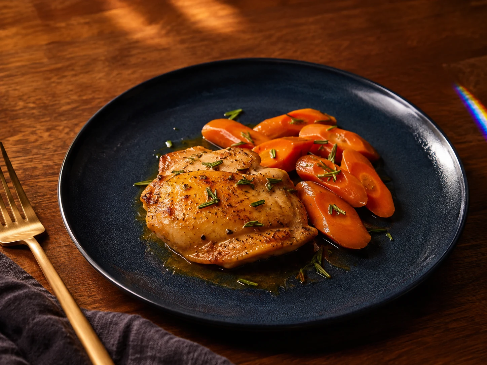

FT-0855
Orange-Rosemary Chicken & Carrot Traybake
Allergens: no major allergen intentionally added; verify chicken and packaged ingredient labels.
Ingredients & method
Ingredients
- 4 boneless skinless chicken thighs, about 1 pound (454 g) total
- 4 medium carrots (about 300 g), cut into 1/4-inch diagonal slices
- 1 small orange, washed; use 1 teaspoon zest and 2 tablespoons juice
- 1 tablespoon olive oil
- 1 teaspoon finely chopped fresh rosemary
- 1 garlic clove, minced
- 1/4 teaspoon black pepper
Method
- Heat the oven to 425 F (218 C). Check the chicken label for added solution or phosphates; keep the thighs refrigerated while preparing produce.
- Wash carrots, orange and rosemary under running water. Slice carrots, grate the orange zest and squeeze the measured juice on a clean produce surface.
- Mix the olive oil, orange zest, juice, rosemary, garlic and pepper in a bowl.
- Toss the carrots with half the mixture and spread them on a rimmed baking sheet.
- On a separate raw-poultry surface, pat the skinless thighs dry and coat with the remaining mixture. Wash hands and clean utensils after raw-poultry contact.
- Set the thighs among the carrots with space between pieces; roast for 15 minutes.
- Turn the carrots with a utensil reserved for this cooking stage and roast for another 10-20 minutes, until carrots are tender.
- Check the thickest part of each thigh reaches at least 165 F (74 C) with a clean thermometer; extend cooking as needed.
- Rest briefly, then use clean serving utensils to plate one thigh and one-quarter of the carrots per person.
- Refrigerate leftovers promptly in shallow containers; follow the storage note.
Dietary notes & storage
Review the chicken portion, carrot quantity and measured orange juice against your own protein, potassium and carbohydrate plan. Citrus is used for flavor; no sodium or potassium level is calculated. Not clinically reviewed; no universal kidney-safe claim or calculated nutrient values. Agree portions and ingredient choices with your renal dietitian. Do not substitute potassium-containing salt.
Storage: Refrigerate leftovers in shallow containers within 2 hours, or 1 hour above 90 F (32 C), at 40 F (4 C) or below. Use within 3-4 days; reheat hot dishes to 165 F (74 C).
Not kitchen-tested · not clinically reviewed
Back to recipe list